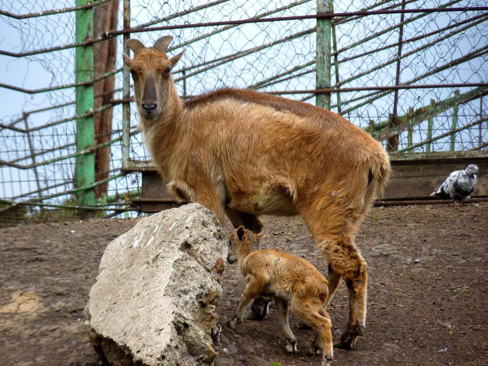
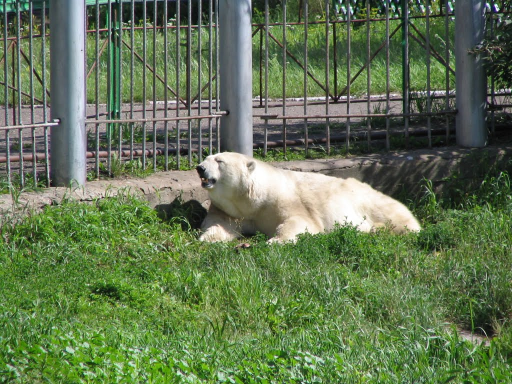

Зоопарки Омской Области


Большереченский зоопарк
Расстояние от Омска -202 км
Время в пути - 2,8 часа
Стоимость билетов - Взрослый – 300 руб.
Детский (до 12 лет) – 100 руб.
Дети до 6 лет, дети-инвалиды до 12 лет – бесплатно
Многодетные семьи – бесплатно, в любой день 1 раз в месяц.
Официальный сайт - http://www.bolzoo.ru
Бюджетное учреждение культуры Омской области «Государственный Большереченский Зоопарк имени В. Д. Соломатина» — уникальный зоопарк для нашей страны. Это единственный в России зоопарк в сельской местности. Он расположен в Омской области, в пойме реки Большая (рядом с ее впадением в Иртыш) на территории в 9 га. Несмотря на то, что Большереченский зоопарк удален от Омска на 200 км, в год его посещают более 100 тысяч туристов, как гостей региона, так и местных жителей.
График работы Большереченского зоопарка зависит от сезона. В летнее время, с мая по октябрь, зоопарк работает с 10 утра до 6 вечера. В зимнее время, с октября по март, с 10 утра до 4 вечера. В зимний сезон касса зоопарка по понедельникам не работает, купить билеты можно в администрации.
Зоопарк в Большеречье был основан в 1984 году на базе школьного зооуголка. Зоопарк дома пионеров при средней поселковой школе сначала принимал раненых животных и зверят-сирот из окрестных лесов. Первыми питомцами зоопарка были медвежонок, оставшийся без мамы, раненый детеныш косули и лисенок. Пруд у школы заполнился водоплавающими птицами: лебедями и утками. Далее зоопарк стал пополняться более экзотическими животными: тигренком и верблюжатами. Из соседних совхозов стали приезжать родители с детьми — покататься на пони, покормить птиц и посмотреть на хищников. К концу года число питомцев насчитывало 40 особей.
В 1987 году зоопарк получил статус государственного — этому поспособствовал Соломатин Валерий Дмитриевич, который в то время был председателем местного райисполкома. Он обратился к властям региона и добился сначала статуса областного зоопарка, а затем и государственного. С 2012 года зоопарк в Большеречье носит имя В. Д. Соломатина. Зоопарк переехал из школы на просторную территорию — его благоустраивали совместными усилиями всех предприятий Большеречья. Сельские предприятия брали шефство над животными, соседние совхозы отправляли корм. В качестве подсобного хозяйства были построены теплицы и даже пасека.
Число питомцев Большеречья постоянно растет. Сегодня в Большереченском зоопарке обитают более 2000 животных двухсот разных видов. Из них около 50 видов внесены в российскую и международную красные книги. Среди них: Хищные кошки: леопард, тигры, лев и пума. Зоопарк прогремел на весь мир, когда в международной прессе написали о том, как местная собака выкормила амурских тигрят. Бегемот. Это уникальный экземпляр — единственный на всю Сибирь. Копытные животные: зубр и овцебык, ламы и олени, лани и косули, яки и верблюды. Экзотические птицы: страусы и павлины, амазонские попугаи. Медведи: белая медведица, барибал, бурый и гималайский медведь. Обезьяны: лапундеры, макаки, павианы, мартышка бразза. Кенгуру. Нильский крокодил, вараны и игуаны. Волки и лисицы. Сурикаты и еноты. Водоплавающие птицы обитают в естественных водоемах. В прудах зоопарка встречаются пеликаны, лебеди, гуси и утки.
В зоопарке проводятся сезонные экскурсии для детей и взрослых: летом театрализованная экскурсия посвящена путешествию в страну чудес вместе с Алисой. В ходе сказочной прогулки с Алисой, Кроликом и Чеширским котом дети не только узнают интересные сведения об обитателях зоопарка, но и поучаствуют в конкурсах с призами. Зимой Большеречье превращается в резиденцию Снежной королевы. Новогодняя экскурсия-квест включает осмотр животных, хороводы и конкурсы, чай со сладостями в деревянной избушке и знакомство со сказочными героями — Бабой Ягой, Снегурочкой, Мальвиной и Дедом Морозом.